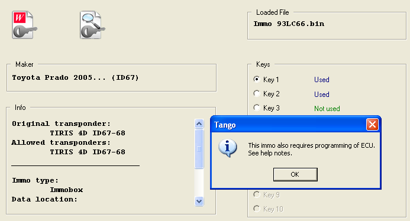

|
ID67-68 Double IMMO |
Top |
|
Toyota Double Key Storage System
There are two classes of immobilization systems used in Toyota after 2004y. with ID67, ID68. The main difference between these classes consist of method of key's data storage. The simplest class keeps the key's data only in the immo. The more complex class has data stored as in an immo as in an ECU.
Always begin to work with an immo. Read the immo dump and open it with a keymaker.
If you have got the message "This immo also requires programming of ECU", it means that you have the complex immobilization system: 
Continue as in a normal situation and make a key. Then read out the ECU dump and run the ECU keymaker. Place the same transponder on Tango and click the WRITE button. Thus, you have finally two new dumps (Immo + ECU), each of them contains the transponder data.
Note: writing into the ECU it is not important which key number selected. For example it is normal to write a key in the immo on the position 1, while in the ECU on the position 2. ECU doesn't check the key position, it only checks a presence of a key data in the memory. |